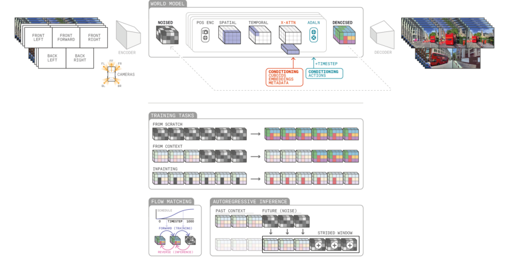
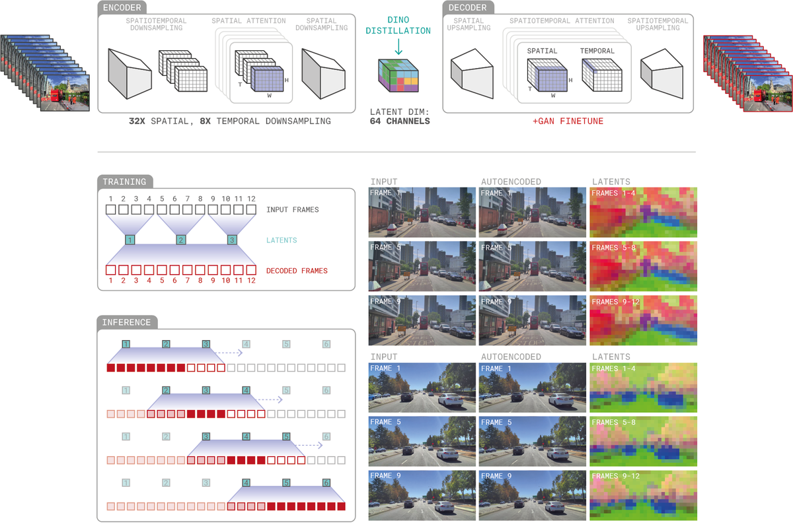
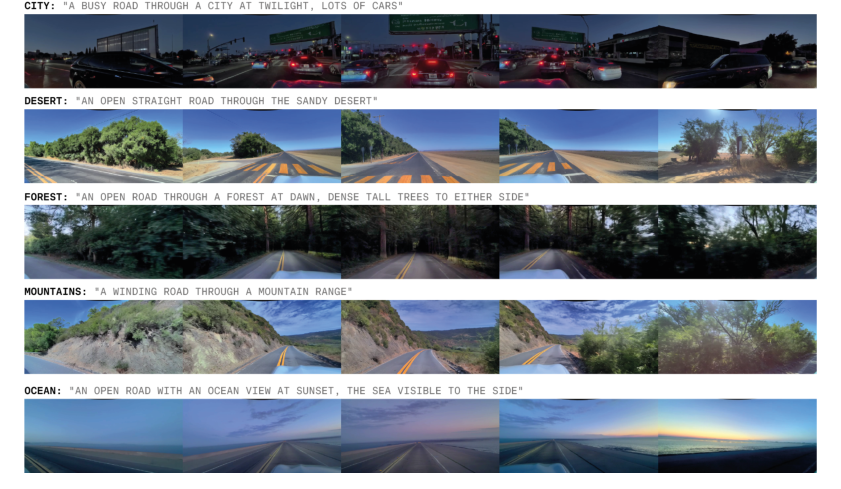
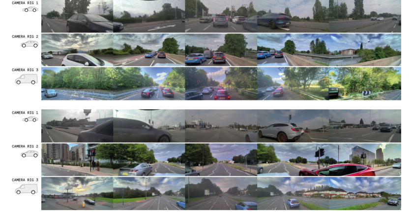
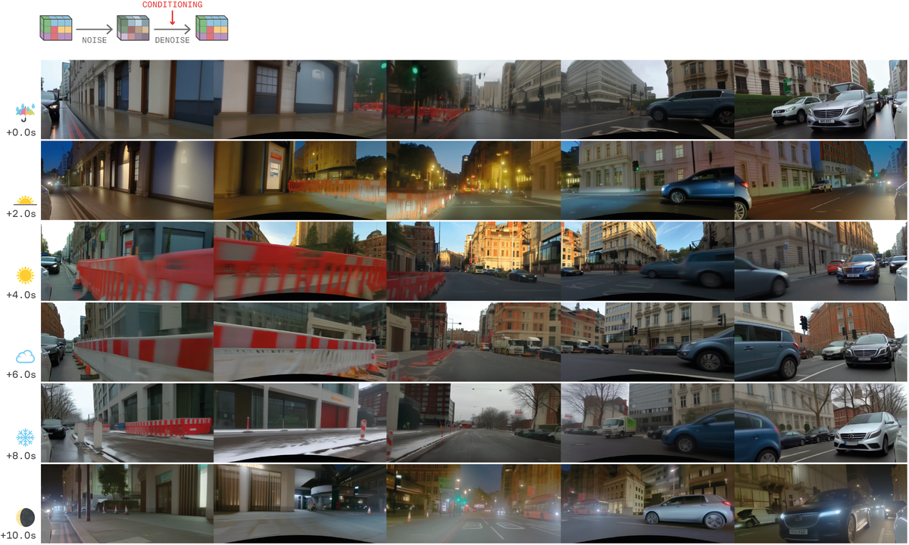
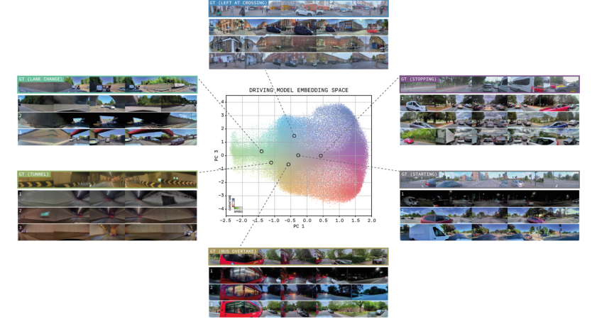
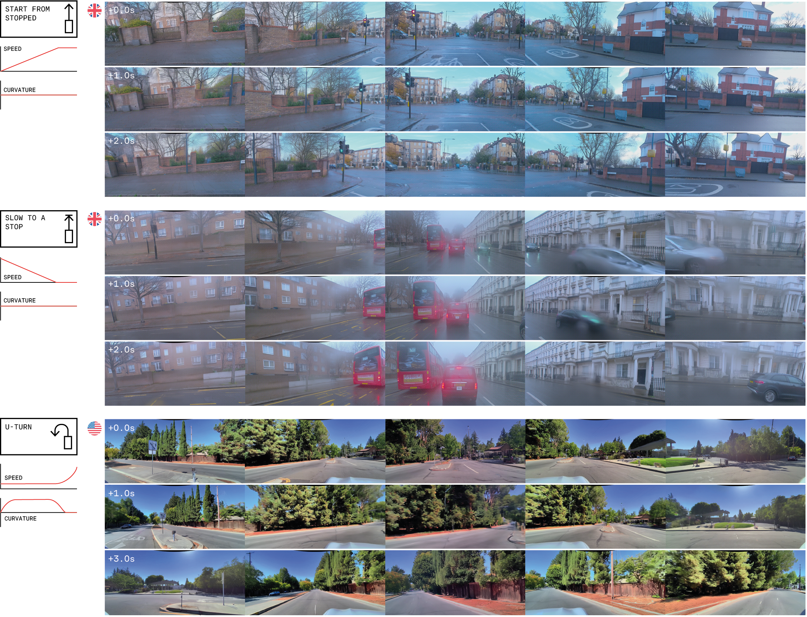

GAIA-2
简单摘要
生成世界模型可以创建可扩展且多样化的合成数据，减少对昂贵的现实世界数据收集的依赖，并促进在安全和可重复的环境中进行稳健的评估。满足这些特定领域的限制提出了现有视频生成模型无法充分解决的独特挑战。

生成世界模型可以创建可扩展且多样化的合成数据，减少对昂贵的现实世界数据收集的依赖，并促进在安全和可重复的环境中进行稳健的评估。满足这些特定领域的限制提出了现有视频生成模型无法充分解决的独特挑战。
核心创新
第一，我们引入了 GAIA-2，即自主生成人工智能，这是一种潜在的扩散世界模型，它将这些功能统一在一个生成框架内。
第二，在自动驾驶的背景下，一些模型引入了特定于任务的调节机制[5,6,7,8,9]，从而能够对场景元素进行一定的控制。
第三，潜在特征的前 3 个主成分被映射到 RGB 值。
技术细节
GAIA-2 支持以丰富的结构化输入为条件的可控视频生成。该模型集成了结构化条件和外部潜在嵌入（例如，来自专有驱动模型），以促进灵活且基于语义的场景合成。


$$ \rvx_{t+1:T}^{\tau} = \tau \rvx_{t+1:T} + (1 - \tau) \rvepsilon_{t+1:T} $$
这条式子给出了论文中的一条核心计算关系。理解时可以先看左侧最终想得到什么结果，再看右侧的 T、tau、tau、T 等量如何共同决定这个结果在方法链路中的作用。
$$ \rvv_{t+1:T} = \rvx_{t+1:T} - \rvepsilon_{t+1:T} $$
这条式子给出了论文中的一条核心计算关系。理解时可以先看左侧最终想得到什么结果，再看右侧的 T、T、T 等量如何共同决定这个结果在方法链路中的作用。
$$ \hat{\rvv}_{t+1:T} = f_{\theta}(\rvx_{t+1:T}^{\tau} | \rvx_{1:t}, \rva_{1:T}, \rvc_{1:T}, \tau) $$
这条式子给出了渲染/成像算子的整体输入输出：模型把相机参数与场景表示一起送入渲染器，得到最终图像或投影结果。它相当于把整条前向生成链路压缩成一个明确的计算接口。
$$ \mathcal{L}_{\text{world-model}} = \mathbb{E}_{t \sim P(t), \tau \sim p(\tau)} [||\rvv_{t+1:T} - \hat{\rvv}_{t+1:T} ||^2] $$
这条式子给出了论文中的一条核心计算关系。理解时可以先看左侧最终想得到什么结果，再看右侧的 L、world、model、mathbb 等量如何共同决定这个结果在方法链路中的作用。
$$ \text{symlog}(y) = \text{sign}(y) \frac{\log(1 + s|y|)}{\log(1 + s|y_{\text{max}}|)} $$
这条式子给出了论文中的一条核心计算关系。理解时可以先看左侧最终想得到什么结果，再看右侧的 symlog、y、sign、y 等量如何共同决定这个结果在方法链路中的作用。
实验结论
实验部分主要围绕 这些定性结果凸显了 GAIA-2 执行细粒度和可控视频生成的能力，支持其在自主系统的可扩展模拟和多样化场景创建中的使用 展开。结果表明，为了定量评估 GAIA-2，我们使用了一套评估视觉保真度、时间一致性和条件准确性的指标。





6.1 定性例子
实验部分主要围绕 GAIA-2 支持生成高度多样化的驾驶场景，涵盖多个国家、天气条件、一天中的时间和道路布局 展开。结果表明，除了通过元数据进行结构化调节之外，GAIA-2 还可以通过 CLIP 嵌入进行指导，从而允许控制标签中未明确捕获的场景语义。
6.2 指标
实验部分主要围绕 为了定量评估 GAIA-2，我们使用了一套评估视觉保真度、时间一致性和条件准确性的指标 展开。结果表明，该指标比较生成视频和真实视频的显式关键点运动特征的分布。
理解评价
如果把这篇论文放回问题背景里看，它真正的价值在于：生成模型为模拟复杂环境提供了可扩展且灵活的范例，但当前的方法不足以满足自动驾驶的特定领域要求，例如多代理交互、细粒度控制和m。这说明作者不是只补一个局部模块，而是在重新组织问题该怎样被解决。
最能支撑这个判断的，还是实验给出的证据：我们引入了 GAIA-2，即自主生成人工智能，这是一种潜在的扩散世界模型，可将这些功能统一在一个生成框架内。换句话说，这些设计并不只是概念上更完整，而是实实在在改变了最终结果。
当然，它离真正成熟的方案还有距离：当前方案的局限在于它仍然受制于计算资源、输入质量或场景复杂度，距离真正稳健的大规模部署还有差距。后续更值得继续推进的方向，是 未来继续提升效率、泛化能力以及在更复杂场景下的稳定性。